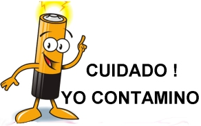
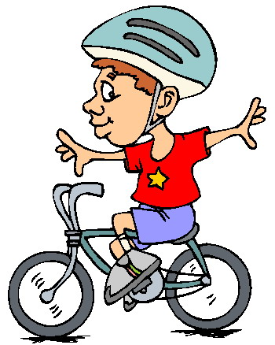

PILAS Y BATERIAS
Las pequeñas pilas y baterías usadas en relojes, cámaras fotográficas, controles remotos, radiograbadoras, teléfonos celulares y juguetes, tienen gran efecto contaminante, tienes el derecho de exigirle a tu proveedor de pilas y baterías, un sistema de recojo y reciclaje de las mismas, hecho que en muchos países es una práctica cotidiana.
LA BICICLETA
Si dispones de una bicicleta úsala cada vez que puedas, para distancias cortas o durante los fines de semana. Solicita a tu municipio vías y señalizaciones adecuadas para la gente que use bicicleta.
Design: VIVIANA CARRILLO GALICIA